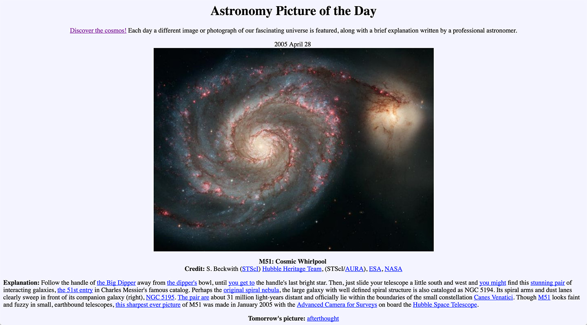
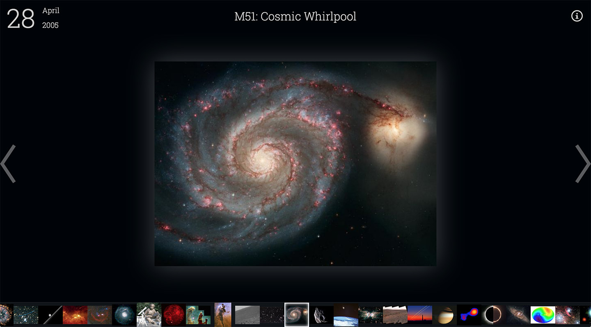
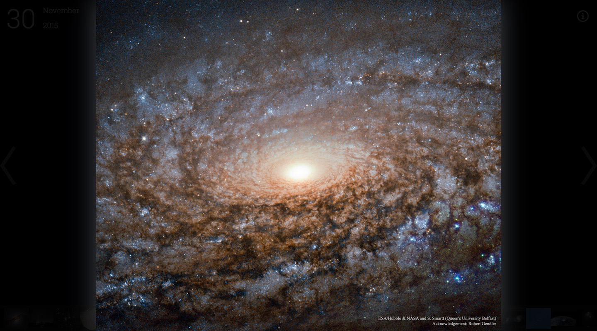
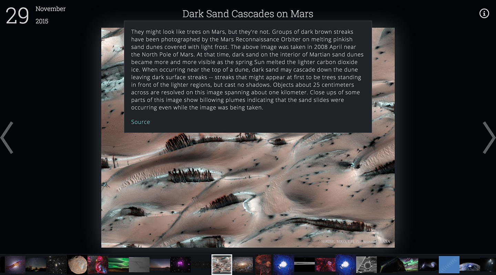
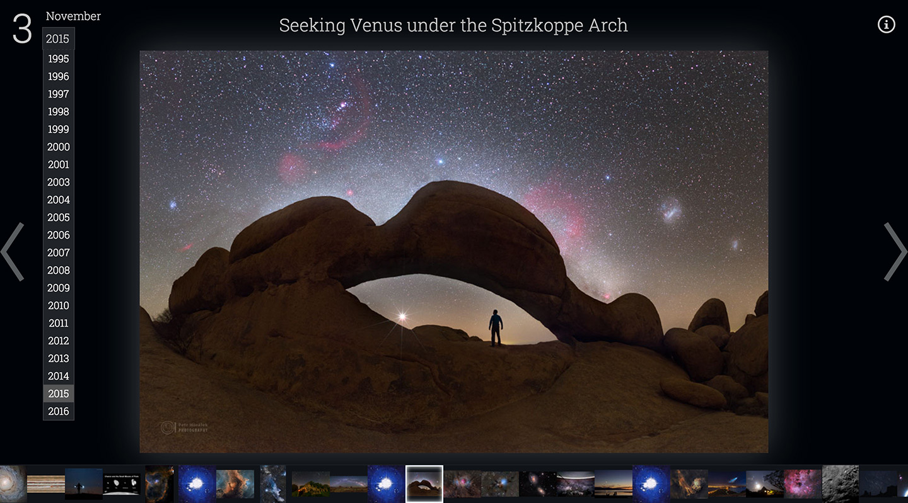

Ask any space, science, or astronomy enthusiast about
NASA's Asronomy Picture of the Day
and they will probably gush about it. Launched in
1995, APOD has served the public with a new beautiful
astronomy-related picture every day for the last 21
years. APOD is one of the most popular government
websites, drawing over 1.5 million visitors per month.
For being such a beloved government service, the
visual design and UI of Astronomy Picture of the Day
is outdated to say the least. The interface has not
been significantly updated in decades, and visiting
the site is like going back to a time when dial-up
modems ruled the land and Google hadn't been invented
yet.

NASA's current Astronomy Picture of the Day
interface
I decided to apply my skills as a UX designer and
frontend developer to update the APOD website for the
modern web. My goal was to make browsing the image
gallery more streamlined, intuitive, and accessible. I
call my new and improved version "APOD 2.0".
Many improvements have been made, including:
-
Dark color scheme better showcases space imagery
-
Keyboard arrow key navigation enables rapid browsing
-
Scrollable filmstrip gives a preview of dozens of
images
- Intelligent image preloading increases speed
-
Dropdown selection makes it easy to select a
specific date
-
Nonessential info is hidden in hover states to keep
focus on the imagery

My updated Astronomy Picture of the Day interface,
"APOD 2.0"
The heavy lifting in the project is done by
React.js, Facebook's amazing UI
library. I chose React.js
because it let me easily encapsulate interactive
components like the filmstrip, thumbnails, and date
picker.
jQuery
was also used for its convenient AJAX capabilities,
and
GreenSock Animation Platform (GSAP)
provides some animation muscle.
Special thanks goes to NASA for
making their APOD API public,
without which this project would not be possible.
APOD 2.0 is open source under the GNU GPL 3.0 license,
and is
available on github.com.
It is an ongoing project which I am constantly
trying to improve upon. Future feature TODO list
includes search, tagging, slideshow, and alternate
navigation modes.

Click an image to quickly view a high resolution
full screen version

Detailed image description is revealed by hovering
the title

Specific dates can be navigated to in seconds via
dropdown
2026 Update
After 30 years of service, in September of 2026, NASA finally updated their APOD website to a
new, clean, more modern look. While this did not entirely render APOD 2.0 obsolete,
unfortunately NASA also deprecated the old API I used for this project. In November 2026 I
revisted this project to fix breaking issues and ensure it continues to serve as a (now rather
historical) showcase of my work and to serve the public.
-
Updated to the new NASA APOD API for data fetching
- Updated NPM dependencies to modern versions
- Added automatic deployment to Firebase via GitHub Actions